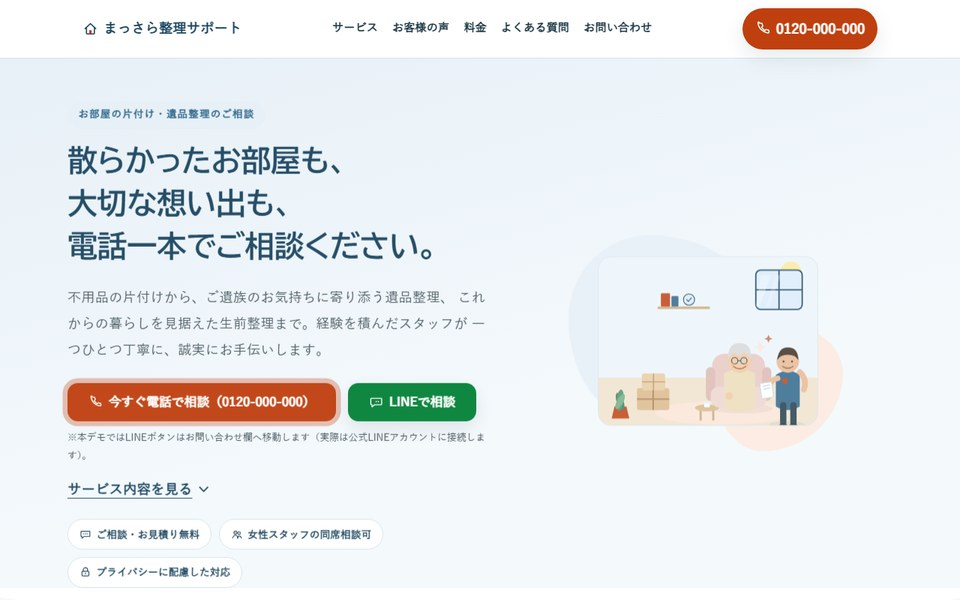

← 実績一覧に戻る
WORKS実績
Web制作
設計・デザイン・実装・検証までを分断せず一人で担当します。ここでは実例として、このXORA公式サイト自体と、クラウドソーシングの案件応募用に制作したデザインサンプルの2件を紹介します。
Internal Project

このサイトのトップページを実際に撮影したスクリーンショット
Webサイト・公開中
XORA公式サイト(このサイト)
Concept Project
架空サービスのデザインサンプルです。実在の企業・サービスではありません
Webデザインサンプル・架空サービス
片付け・遺品整理サービスのTOPページ「まっさら整理サポート」
